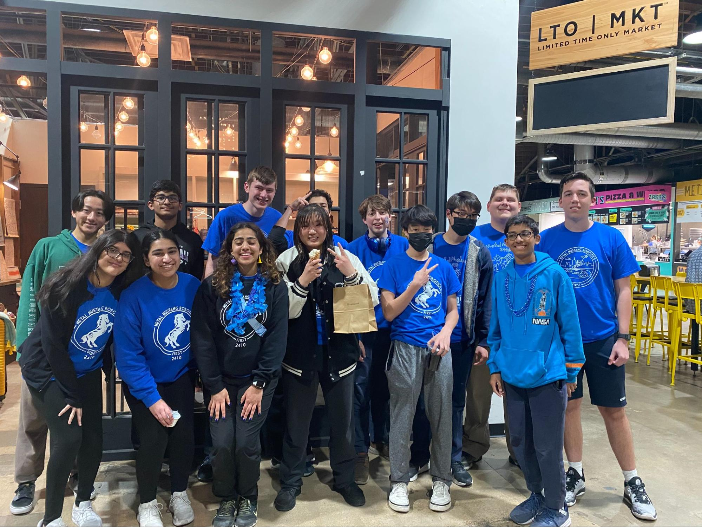
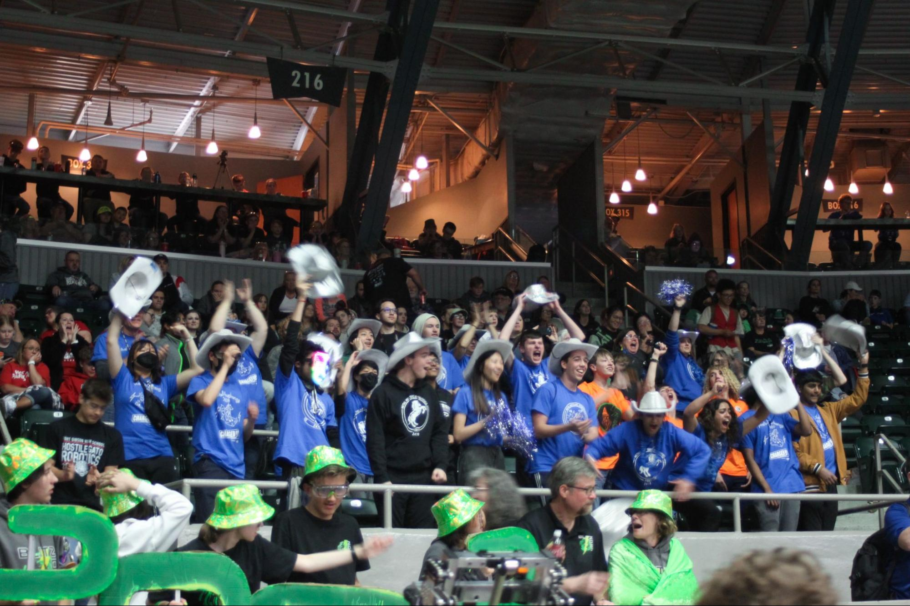
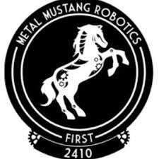
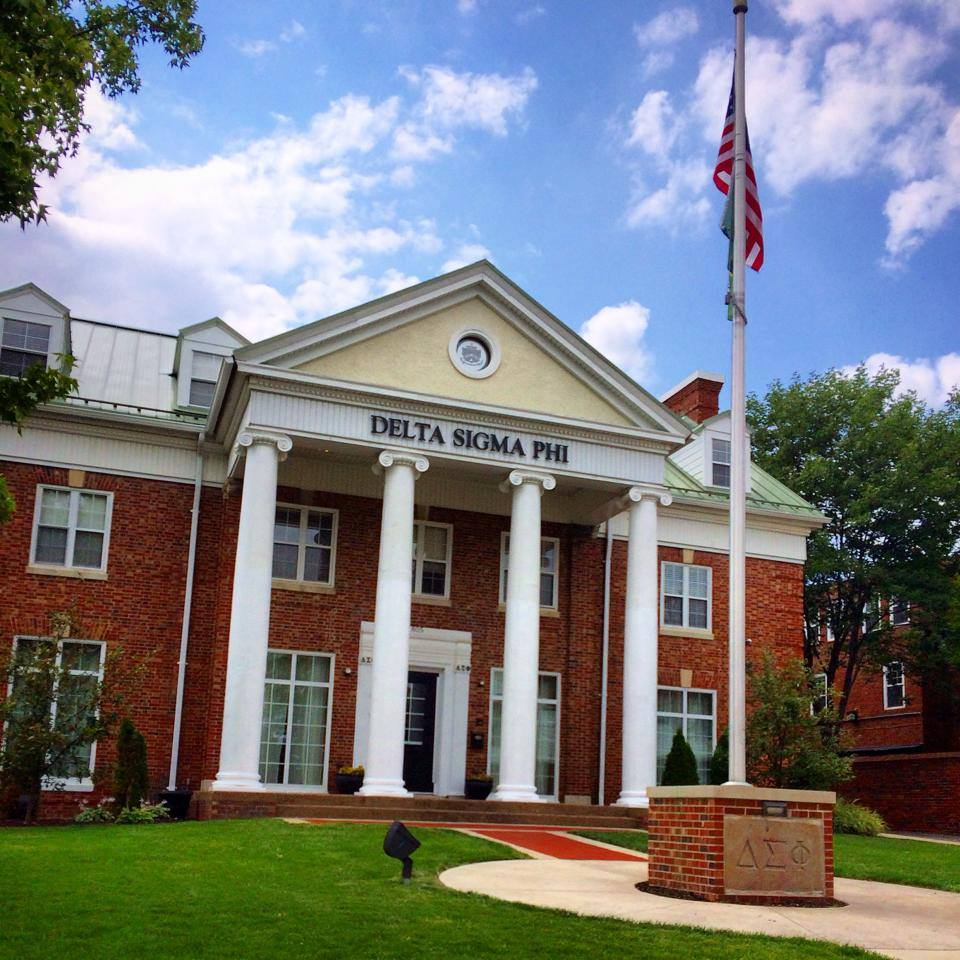
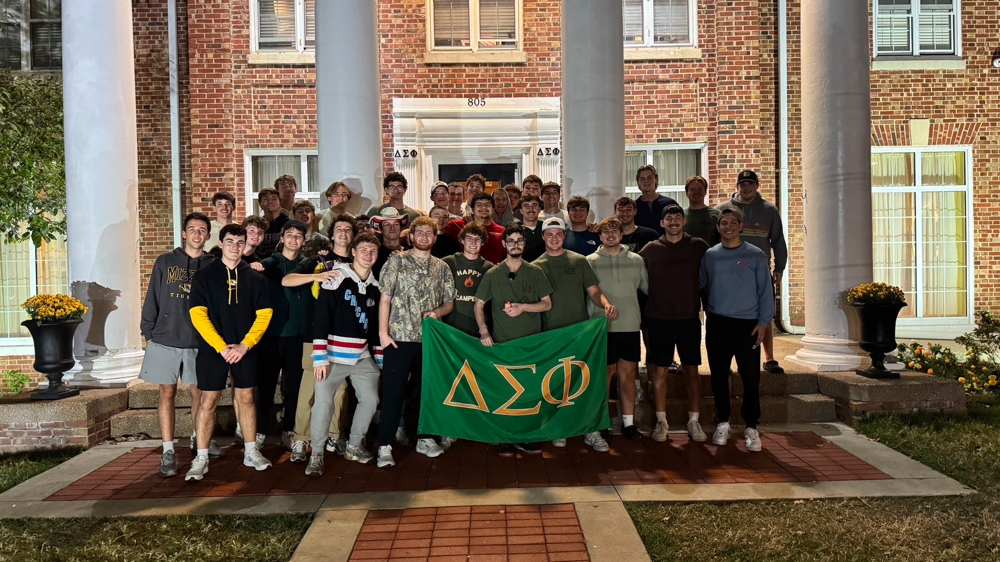

Projects & Experience
A look at the projects, competitions, and organizations that have shaped my path as a Computer Science student at the University of Missouri.
1. Caesar's Cipher — JavaScript
This was a coding project that I did in high school. Caesar's Cipher is a cipher where you have a word such as HELLO and then you give it a shift such as two. That would make each letter go two letters down the alphabet, so the final answer would be JGNNQ. In high school, most of my coding knowledge was in Java and JavaScript. The program prompts you to type a word in all caps and a shift number, then loops through each character to encode the string using modulo arithmetic to wrap around the alphabet. It was one of the first complete programs I built from scratch entirely on my own.
This was one of my first projects that I did on my own and I think this was the moment that I wanted to start programming as a degree when I graduated college. There really isn't a ton of code for this project, but it highlights the topics that I learned in high school and gave me the confidence to pursue Computer Science at Mizzou.
default.js — Caesar's Cipher source code
function start() {
println("Ceaser's Cipher");
var oldString = prompt("Type text before encryption in ALL CAPS");
var shift = parseInt(prompt("Type shift of text"), 10);
var arr = ["A","B","C","D","E","F","G","H","I","J","K","L","M",
"N","O","P","Q","R","S","T","U","V","W","X","Y","Z"];
var newString = "";
encoder(arr, oldString, newString, shift);
}
function encoder(arr, oldString, newString, shift) {
for (var i = 0; i < oldString.length; i++) {
var letter = oldString.charAt(i);
var index = arr.indexOf(letter);
var realIndex = (index + shift) % 26;
if (index === -1) {
println("Unable to cypher");
break;
}
newString += arr[realIndex];
}
println("Encoded: " + newString);
}
2. First Robotics Competition (FRC) — Team 2410
I joined FRC Team 2410, the Metal Mustangs, my sophomore year of high school in 2021. Every year, we would get a challenge that our robot would have to go through. Then, we would have two to three months to build a robot to compete in competitions across the country. Teams play against each other in alliances, and the winning alliances advance to the next round. The world championship is held annually in Houston against teams from across the entire world. Our team reached the Tulsa Regional and finished in 3rd place — the farthest our team had ever gone. I helped with both the build process and the programming side of the robot.
This was a very good experience. I will always remember when we were in the playoffs cheering our team on as we somehow kept on winning. This was one of the first times that I learned how to code and work with lots of different machines. I learned how to work as a team in a very short timeline and build a robot from scratch.



3. Delta Sigma Phi Fraternity — University of Missouri
This past fall I rushed Delta Sigma Phi at the University of Missouri. I joined this fraternity to build a brotherhood and meet new people. Being part of this organization has required significant time management in order to actively participate in chapter and social events. This organization has also given me people that are older than me that have taken classes that I am in and given me lots of helpful feedback. My brothers have also helped encourage my goal of maintaining a 3.5 GPA while pursuing my degree in Computer Science.
Joining this fraternity has been one of the most important parts of my college life at Mizzou. I have learned how to be a leader and improved my ability to manage my demanding academic schedule. I now feel more confident in my professional communication and organizing abilities. I have met people that I will be lifelong friends with and these connections will help me even after I graduate.

